---
---
---

Hello, my name is Hermina Tealie, undergrad in BCM.
Today I will talk about the digital artifacts I will be making in this course, BCM 206 Future Networks,
this is the first of three assignments in this course.
In this project ideation stage, I will talk about what kind of digital artifacts I will be making,
and why this serves a significance to me, and to my target audiences.
Digital artifacts - Art tutorials
In this course, the digital artifacts I will be creating are art tutorials.
More specifically, art tutorials for digital illustrations.
As you can see here, they teach artists on how to draw something, and they can be in different formats as well:
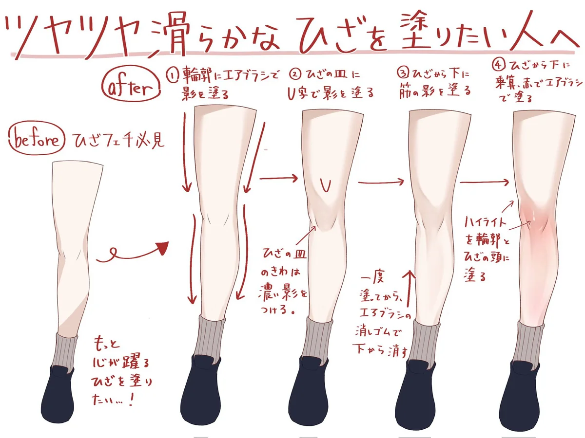
Why Do Your Knees Look Wrong?
— Gravstock (@grav_stock) September 15, 2026
(louis20213) pic.twitter.com/pzJn2sSSrA
They can be a diagram, or even a short form video.
There are a lot of art tutorials on the internet, which goes from drawing hair, backgrounds, to shading. There are lots of variety, and they are also great for engagement too.
Background Context
Now onto why these artifacts matters and for whom, I will first explain my blog that I will be posting these contents onto.
The digital artifacts I will be creating for this course will mainly be posted onto my Twitter / X account,
I mainly posts my art onto my Twitter, treating it a sort of online portfolio.
This illustration at the bottom is the most successful piece on my Twitter. This post alone helped me break from ~400 followers in 2025 to 3.7k in 2026.
Lilith wishes everyone a Happy Christmas!!!#thenoexistencenofyouandme #lilith pic.twitter.com/3sVYQKpqoB
— Hermina Tealie (@IHOKE_) December 25, 2025
After having a follower surge, I have kept creating illustrations in the same art style, character from the game and for the same audiences (whom are fans of the game). And they consistently gathered several thousands of like on each post.
Content Gap
Despite the fact that everything runs well, there is a problem with my contents.
And it is that most of my contents are static.
Meaning users have little to no reason to start a discussion under my posts, or take away anything from my illustrations.
While they are passive observers, I think they do want to know more about how to draw better.
This is supported by the fact that theres this guy and that guy on reddit and discord asking me to coach them how to draw,
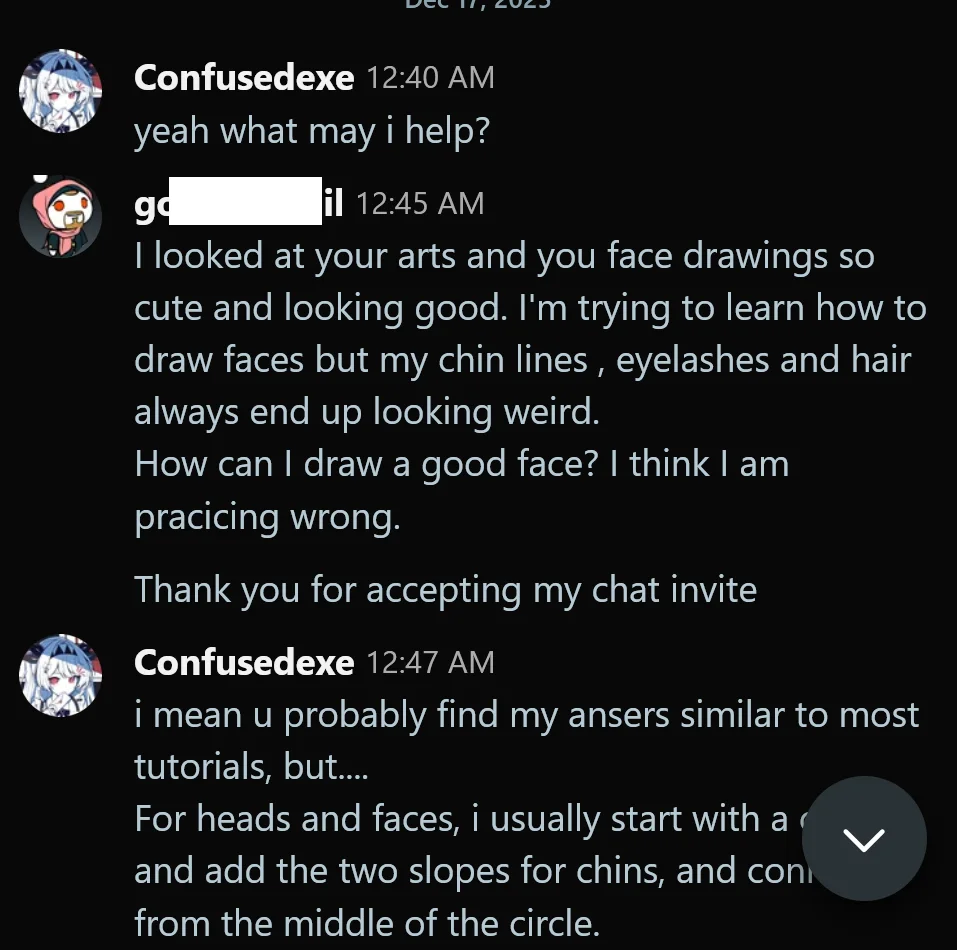
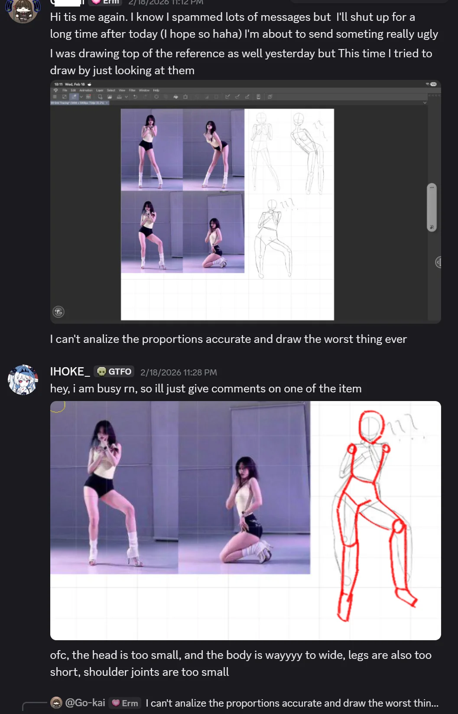
And in the community that I am currently drawing fan art with, you can see alot of artists starting their own art journey
and lets just say that they can all benefit with a little art tutorial...
Conclusion
Finally, to conclude everything, I will be making art tutorials for my Twitter account during this course, this is mainly for my target audiences who wants to learn a thing or two about how I draw.
In the next assignment, I will be explaining more in depth, about what formats I want my artifacts in, and what topics to explore.
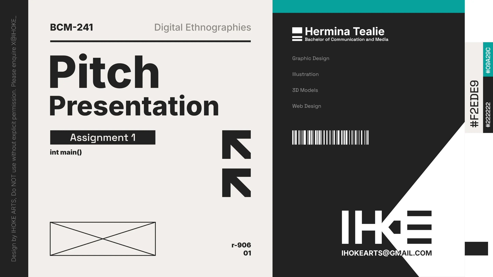
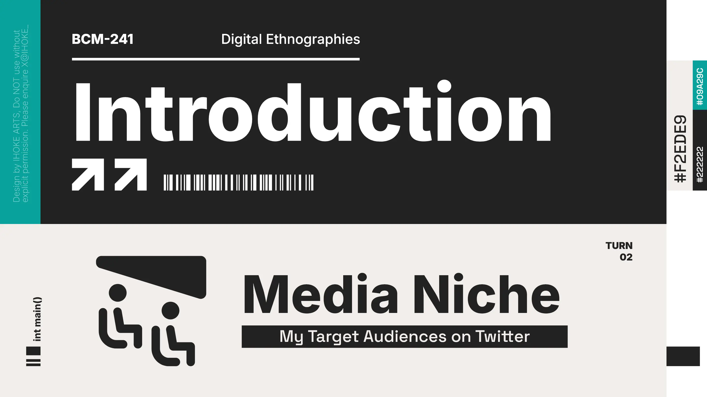
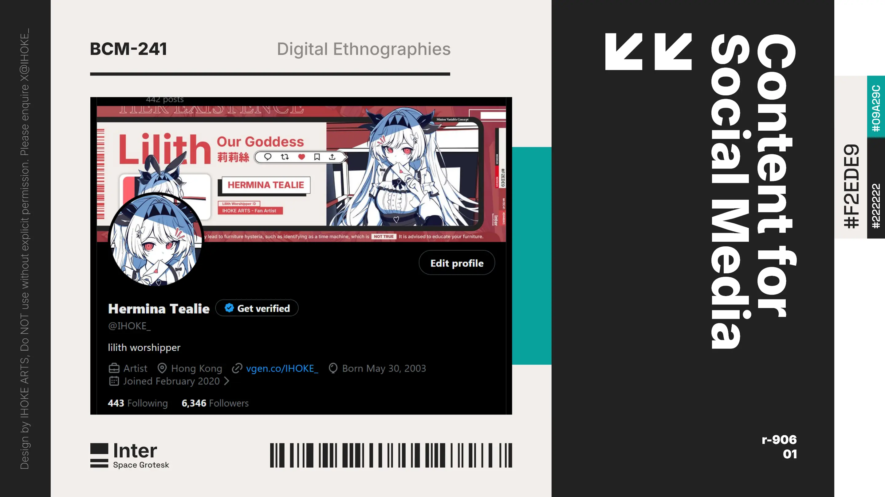
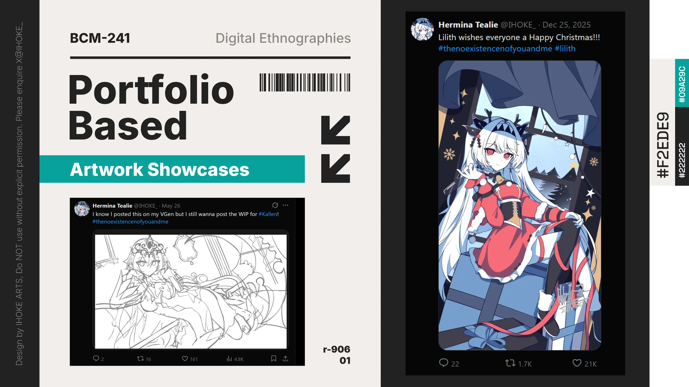
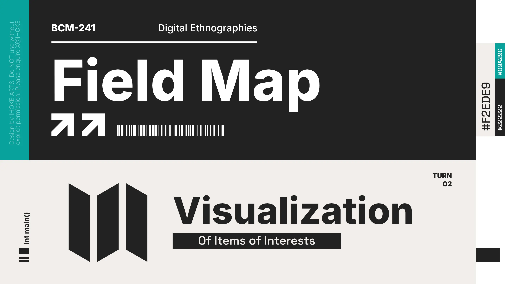
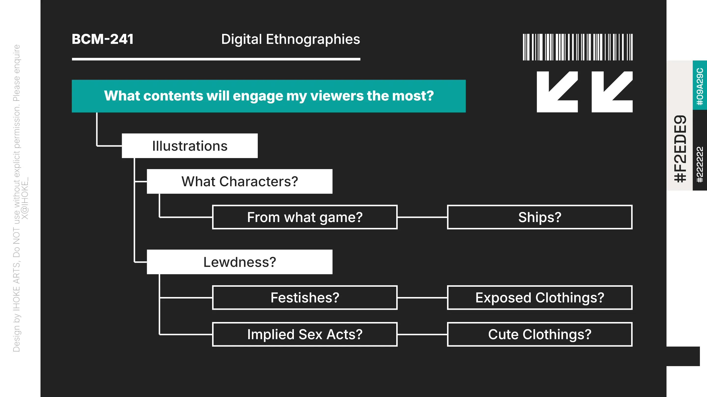
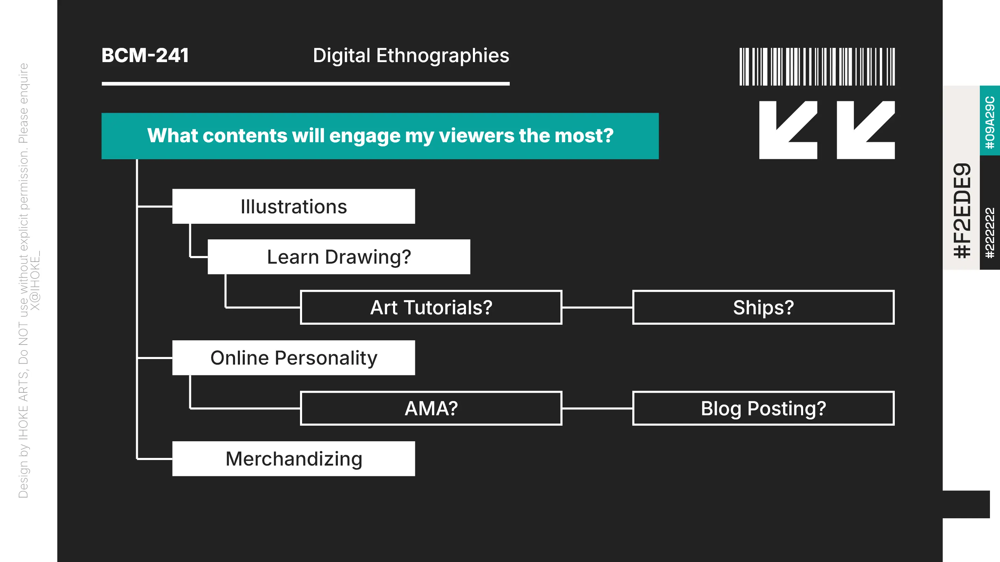
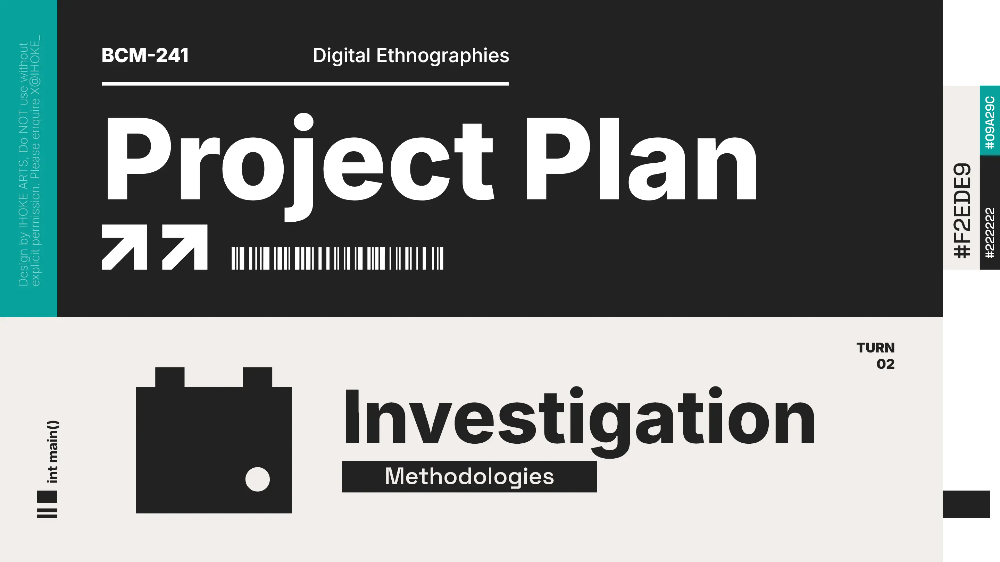
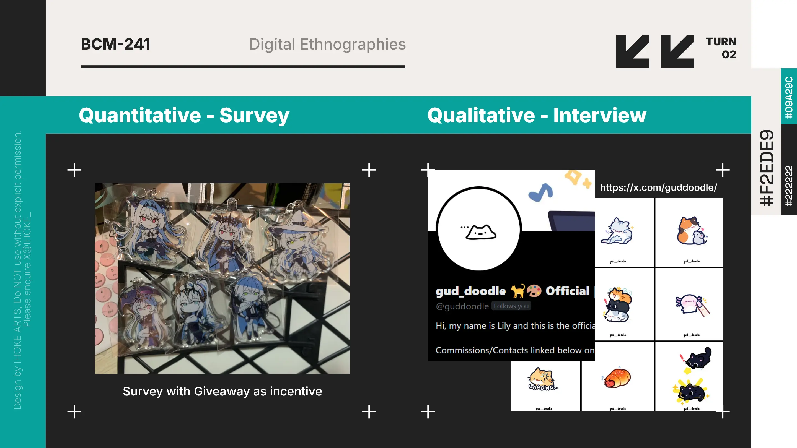
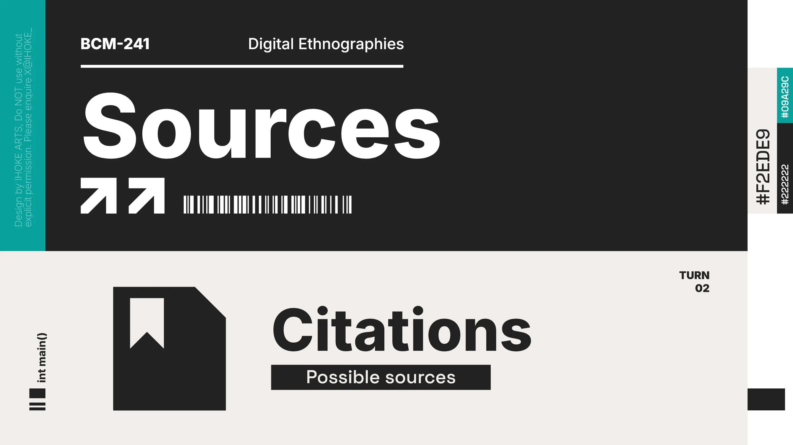
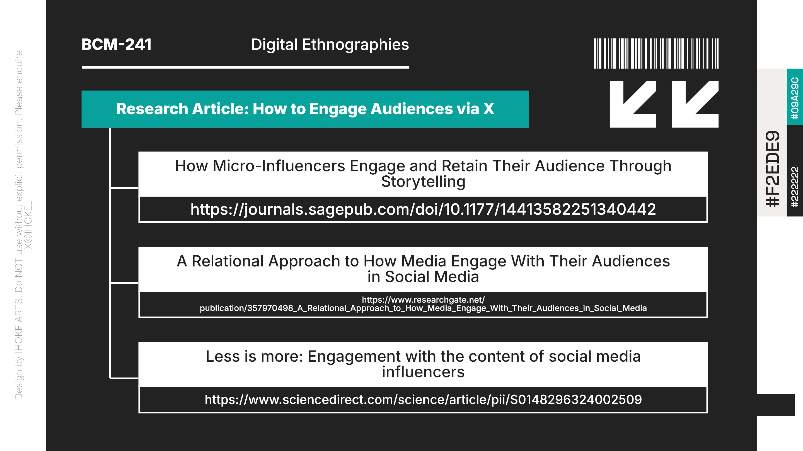
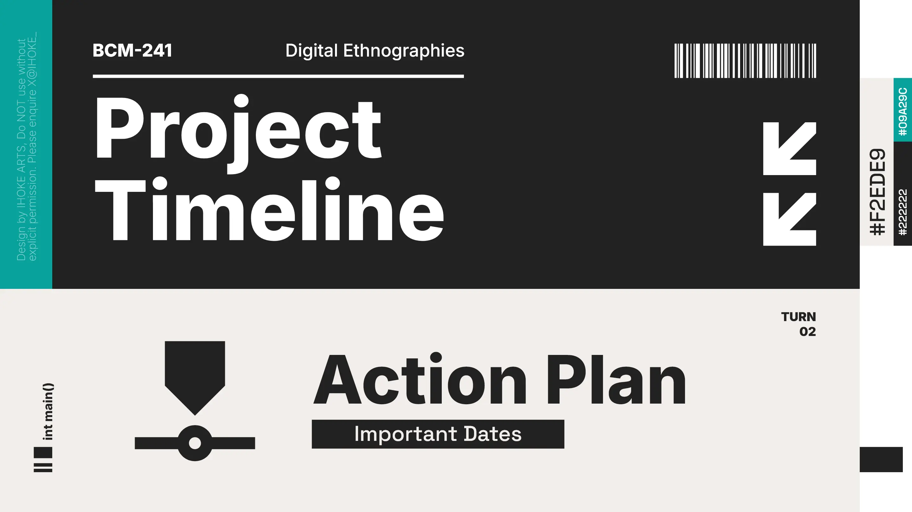
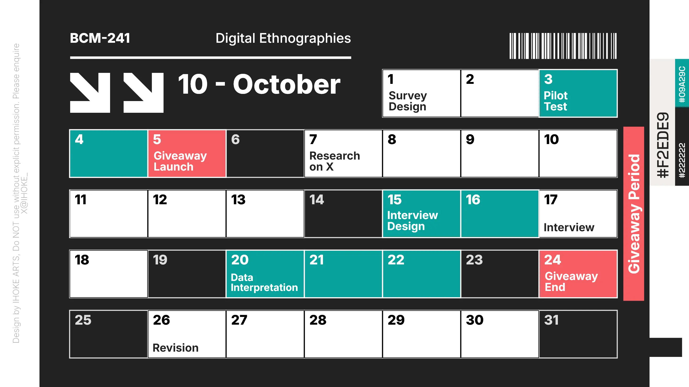